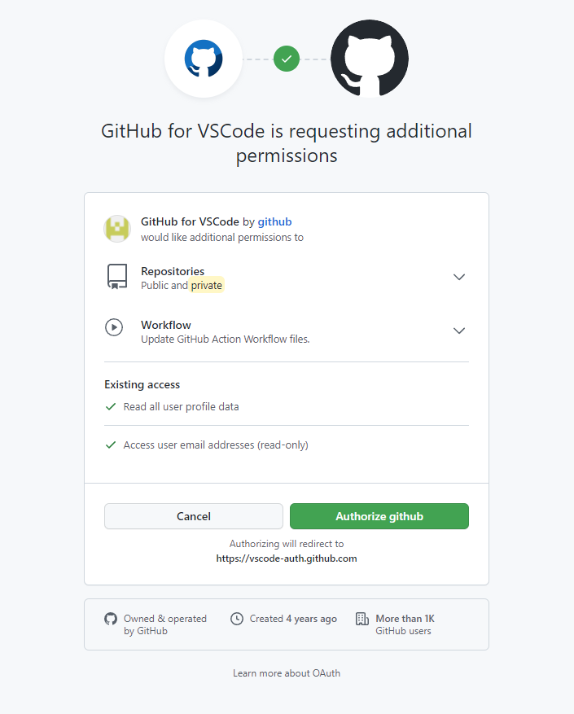

React
React는 웹 프레임워크로, Javascript 라이브러리의 하나로 사용자 인터페이스를 만들기 위해 사용된다.
React 설치
Node.js 설치
React를 사용하기 전에 Node.js를 설치해야한다.
https://nodejs.org/ko 사이트에서 14.18.1 LTS버전을 설치한다.
https://nodejs.org/ko 사이트에서 14.18.1 LTS버전을 설치한다.
Node.js 설치 확인
명령 프롬프트에서 아래의 명령어를 입력하여 설치를 확인한다.
node -v
node -v
React 설치 경로 설정
설치 확인 후 React를 설치할 경로를 설정해준다.

React 설치
npx create-react-app react2021 를 입력하여 react를 설치해준다.
아래와 같이 나오면 설치 성공이다.
아래와 같이 나오면 설치 성공이다.
Success! Created react2021 at C:\Users\KDONG\Documents\GitHub\react2021
Inside that directory, you can run several commands:
npm start
Starts the development server.
npm run build
Bundles the app into static files for production.
npm test
Starts the test runner.
npm run eject
Removes this tool and copies build dependencies, configuration files
and scripts into the app directory. If you do this, you can’t go back!
We suggest that you begin by typing:
cd react2021
npm start
Happy hacking!
React 사용방법
터미널 설정
Visual Studio Code에 들어간 뒤 리액트 폴더만 연 상태에서 터미널을 켜 준다.
켜준뒤 아래의 코드를 입력하여 React를 켜준다.
npm start
켜준뒤 아래의 코드를 입력하여 React를 켜준다.
npm start
Compiled successfully!
You can now view react2021 in the browser.
Local: http://localhost:3000
On Your Network: http://192.168.137.1:3000
Note that the development build is not optimized.
To create a production build, use npm run build.
성공화면
아래와 같은 화면이 출력되면 React 사용준비 끝이다.
Node Sass 설치
터미널 설정
Visual Studio Code에 들어간 뒤 리액트 폴더만 연 상태에서 터미널을 켜 준다.
켜준뒤 아래의 코드를 입력하여 Node Sass를 설치해준다.
npm install node-sass@4.14.1
켜준뒤 아래의 코드를 입력하여 Node Sass를 설치해준다.
npm install node-sass@4.14.1
+ react-router-dom@5.3.0
added 11 packages from 6 contributors and audited 2042 packages in 12.558s
155 packages are looking for funding
run `npm fund` for details
found 36 vulnerabilities (11 moderate, 24 high, 1 critical)
run `npm audit fix` to fix them, or `npm audit` for details
성공화면
아래와 같은 화면이 출력되면 설치가 완료되었다.
Router 설치
터미널 설정
Visual Studio Code에 들어간 뒤 리액트 폴더만 연 상태에서 터미널을 켜 준다.
켜준뒤 아래의 코드를 입력하여 Router를 설치해준다.
npm install react-router-dom
켜준뒤 아래의 코드를 입력하여 Router를 설치해준다.
npm install react-router-dom
+ react-router-dom@5.3.0
added 11 packages from 6 contributors and audited 2042 packages in 12.558s
155 packages are looking for funding
run `npm fund` for details
found 36 vulnerabilities (11 moderate, 24 high, 1 critical)
run `npm audit fix` to fix them, or `npm audit` for details
성공화면
아래와 같은 화면이 출력되면 설치가 완료되었다.
GitHub 연동
Git 설치
https://git-scm.com/ 의 사이트에 접속하여 git을 설치한다.
비쥬얼 스튜디오 코드 왼쪽에 깃 표시가 생성되면 설치완료
비쥬얼 스튜디오 코드 왼쪽에 깃 표시가 생성되면 설치완료
GitHub 연동방법 1
왼쪽에 깃을 눌러 간단한 내용을 입력한 후 체크 버튼을 눌러 실행해준다.
GitHub 연동방법 2
yes를 눌러준다. → Publish Change를 누른후 Allow를 클릭하여 GitHub 로그인을 해준다.
GitHub 연동방법 3
yes를 눌러준다. → Publish Change를 누른후 Allow를 클릭하여 GitHub 로그인을 해준다.

GitHub 연동방법 4
완료 해주면 아래와 같은 화면이 뜨면 성공이다.
GitHub 연동방법 5
아래와 같이 .gitignore가 생성이 되면 연동 완료